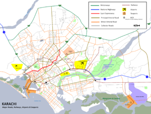
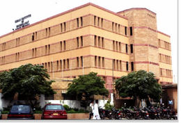

Usman Institute of Technology (UIT), is a not-for profit institute. UIT’s campus is located at the intersection of University Road, and Abul Hasan Isphahani Road, Gulshan-e-Iqbal, Karachi, Pakistan
The institute offers undergraduate studies in engineeringand computer science programmes.[7] All Undergraduate Degree Programmes of Usman Institute of Technology are affiliated with the NED University of Engineering and Technology. Students, who comply with the conditions prescribed by the University and successfully fulfill the requirements of the degree programmes, are awarded degrees by NED University of Engineering & Technology, Karachi.
Usman Memorial Foundation was formed in 1973 in the memory of Late Mohammad Usman, by his family members, friends and well-wishers. Mr. A.K. Brohi was the first President, while Dr. Manzoor Ahmad was the Secretary General of the Foundation. There were two Usman Memorial Scholarship awarded to research scholars namely Dr. Syeda Khatoon for research entitled "An Analysis of Religion Philosophy of Sir Syed Ahmed" and Dr. Rasheed Ahmed Jalandri for research entitled "Deoband Movement and Religious reforms". Both the research papers were published in the shape of a book. In 1994, the Foundation established Usman Institute of Technology (UIT) on the plot of land allotted to the Foundation located at Abul Hasan Isphahani Road, with total contribution from the Hasham family. UIT is located in KarachiUITUIT Location in Karachi located at Abul Hasan Isphahani Road, with total contribution from the Hasham family  